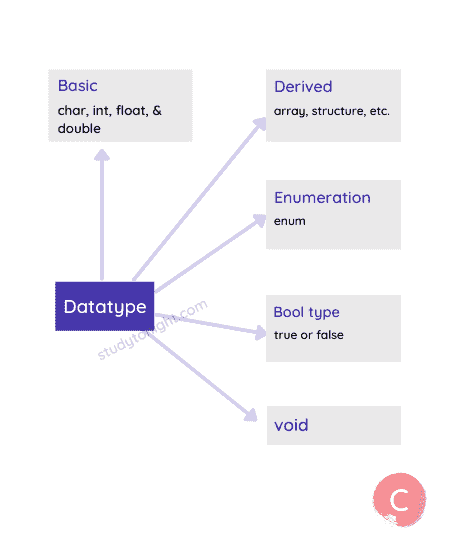
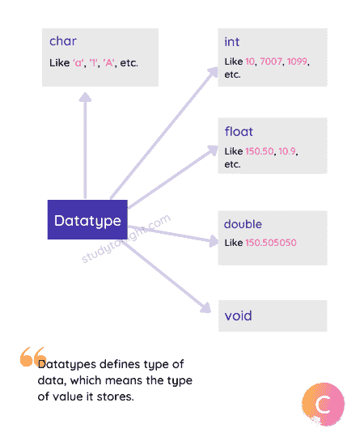

理解 C 数据类型
顾名思义，数据类型定义了正在使用的数据类型。每当我们定义一个变量或者在 C 语言程序中使用任何数据时，我们都必须指定数据的类型，这样编译器就知道需要什么类型的数据。
例如，您可能想要使用像 1 、 2 、 100 这样的数字，或者像 99.95 、 10.5 这样的小数点数字，或者像【今晚学习】这样的文本，所有这些值都是由 C 语言编译器以不同方式处理的**
在本教程中，我们已经解释了数据类型，对于代码示例，使用 C 数据类型教程来检查。
数据类型
大体上，在 C 语言中有 5 种不同的数据类型，它们是:
| 类型 | 例子 |
|---|---|
| 基础 | 字符、整数、浮点、双精度。 |
| 得到 | 数组、结构、并集等。 |
| 列举 | 枚举数 |
| 布尔类型 | 对还是错 |
| 空的 | 空值 |

主要数据类型:
C 语言有 5 种基本数据类型，它们是:
字符 - ASCII 字符集或一般单个字母表，如【a】**【B】**等。
整数 -用于存储整数，如 1 、 2 、 100 、 1000 等。
浮点 -小数点或实数值，如 99.9 、 10.5 等。
双 -整数或浮点类型中不允许的非常大的数值。
Void -这表示没有值。这种数据类型在我们定义函数时最常用。
有不同的关键字来指定这些数据类型，关键字有:
| 数据类型 | 关键字 |
|---|---|
| 性格；角色；字母 | char |
| 整数 | int |
| 浮点 | float |
| 两倍 | double |
| 空的 | void |

每个数据类型都有一个以位/字节定义的大小，并且这些数据类型可以保存的值有一个范围。
不同数据类型的大小
不同数据类型的大小取决于编译器和处理器类型，简而言之，它取决于运行 C 语言的计算机和安装的 C 编译器版本。
字符是 1 字节
char数据类型为 1 字节或 8 位。这基本上是一样的，不受处理器或所用编译器的影响。
int 可以是 2 字节/4 字节
有一个非常简单的方法来记住int数据类型的大小。int数据类型的大小通常等于程序执行环境的字长。简单来说，对于 16 位环境，int为 16 位或 2 字节，对于 32 位环境，int为 32 位或 4 字节。
浮点是 4 字节
float数据类型为 4 字节或 32 位大小。是单精度数据类型，用于保存十进制值。它用于存储大值。
与double相比，float是一个更快的数据类型，因为double数据类型处理非常大的值，因此速度很慢。
double 是 8 字节
double数据类型为 8 字节或 64 位大小。它可以存储的值是浮点数据类型可以存储的值的两倍，因此被称为double。
在这 64 位中， 1 位用于符号表示， 11 位用于指数，其余 52 位用于尾数。
double数据类型大约可以容纳 15 到 17 位数字，在小数之前和小数之后。
void 为 0 字节
void数据类型没有任何意义，因此它没有大小。
| 好阅读:理解什么是位和字节 |
在讨论这些数据类型的取值范围之前，还有一个更重要的概念需要学习，那就是数据类型修饰符。
数据类型修饰符:
在 C 语言中，有 4 个数据类型修饰符，它们与基本数据类型一起使用来进一步对它们进行分类。
比如你说，有操场，对方就知道有操场，但是你可以具体一点说，有板球操场或者足球操场，这样对对方来说就更清楚了。
同样，C 语言中也有修饰符，以使主数据类型更具体。
以下是修饰语:
签名
无符号的
长的
短的
顾名思义，有符号和无符号用于表示任何数据类型的有符号(+和-) 和无符号(仅+)值。而长和短会影响任何数据类型的值的范围。
例如，有符号 int 、无符号 int 、短 int 、长 int 等。都是 C 语言中有效的数据类型。
现在让我们看看不同数据类型的范围，这些数据类型是由 5 种主要数据类型以及上面指定的修饰符形成的。
数据类型值范围
在下表中，我们有 C 语言中不同数据类型的范围。
| 类型 | 典型位大小 | 最小范围 | 格式规范 |
|---|---|---|---|
char |
eight | -127 到 127 | %c |
unsigned char |
eight | 0 到 255 | %c |
signed char |
eight | -127 到 127 | %c |
int |
16 岁或 32 岁 | -32，767 至 32，767 | %d、%i |
unsigned int |
16 岁或 32 岁 | 0 至 65，535 | %u |
signed int |
16 岁或 32 岁 | 与 int 相同 | %d、%i |
short int |
Sixteen | -32，767 至 32，767 | %hd |
unsigned short int |
Sixteen | 0 至 65，535 | %hu |
signed short int |
Sixteen | 与短整型相同 | %hd |
long int |
Thirty-two | -2，147，483，647 至 2，147，483，647 | %ld、%li |
long long int |
Sixty-four | -(2 63 - 1)至 2 63 - 1(由 C99 标准增加) | %lld、%lli |
signed long int |
Thirty-two | 与 long int 相同 | %ld、%li |
unsigned long int |
Thirty-two | 0 至 4，294，967，295 | %lu |
unsigned long long int |
Sixty-four | 2 64 - 1(由 C99 标准增加) | %llu |
float |
Thirty-two | 1E-37 至 1E+37，精度为六位数 | %f |
double |
Sixty-four | 1E-37 至 1E+37，精度为十位数 | %lf |
long double |
Eighty | 1E-37 至 1E+37，精度为十位数 | %Lf |
如上表所示，数据类型和修饰符的不同组合会改变值的范围。
当我们想要打印任何数据类型的任何变量的值时，我们必须在printf()语句中使用格式说明符。
如果该值超出范围会发生什么？
嗯，如果你试图给任何超过允许值范围的数据类型赋值，那么 C 语言编译器会给出一个错误。下面是一个简单的代码示例来说明这一点，
#include <stdio.h>
int main() {
// allowed value up to 65535
unsigned short int x = 65536;
return 0;
}
警告:大整数隐式截断为无符号类型[-Overflow] 无符号短 int x = 65536 ^
当使用一个类型修饰符而没有任何数据类型时，则int数据类型被设置为默认数据类型。所以，unsigned表示unsigned``int``signed表示signed``int``long表示long``int``short表示short int。
signed``unsigned是什么意思？
这解释起来有点棘手，但让我们试试。
简单来说，unsigned修饰词表示所有正值，而signed修饰词表示正负值。
当编译器获得一个数值时，它将该值转换为二进制数，这意味着 0 和 1 的组合。比如二进制的 32767 就是011111111 111111，二进制的 1 就是 01(或者 0001) ， 2 就是 0010 等等。
在有符号整数的情况下，最高位或左边第一个数字(二进制)用作符号标志。如果标志为 0 ，则数字为正，如果为 1 ，则数字为负。
因为一位用于显示数字是正的还是负的，所以少了一位来表示数字本身，因此范围更小。
对于符号 int ，11111111111 111111 表示-32，767 ，由于第一位是符号标志，将其标记为负数，其余表示数字。鉴于在无符号整数的情况下，1111111111是指 65，535 。
派生数据类型:
虽然有 5 种主要的数据类型，但是在 C 语言中也有一些派生的数据类型用于存储复杂的数据。
派生数据类型只不过是主数据类型，但有点扭曲或组合在一起，就像一个 数组**结构**并集和 指针 。这些将在后面详细讨论。
结论:
在下一个教程中，我们将学习变量，在这里，您将学习数据类型的实际用法，以及 man 代码示例。所以我们继续吧。